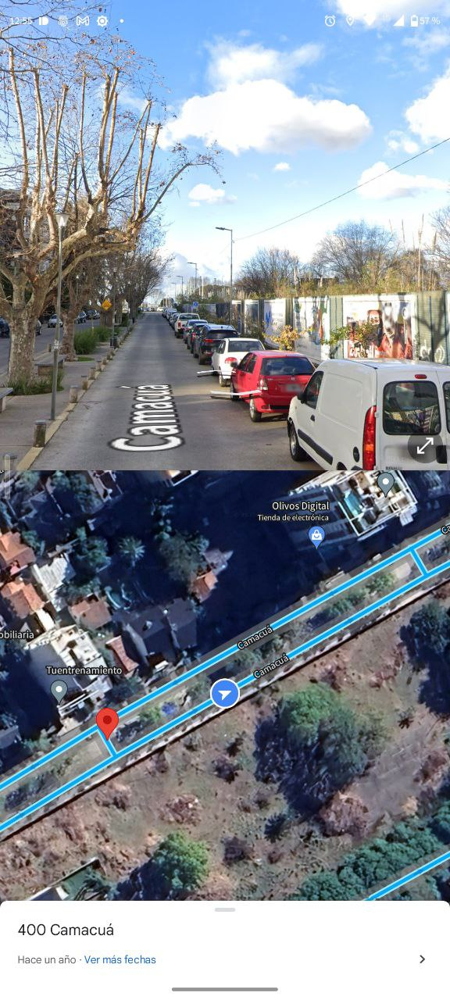

Primer desafío
Encontrar la ubicación donde se tomó la fotgorafía que se muestra a continuación:

RESOLUCIÓN DEL EJERCICIO:
Segundo desafío
Encontrar la ubicación donde se grabaron las escenas donde aparece la motocicleta del video que se exhibe a continuación:
RESOLUCIÓN DEL EJERCICIO:
Tercer desafío
Encontrar el modelo exacto del anillo de Helsinki:
RESOLUCIÓN DEL EJERCICIO:
Cuarto desafío
Encontrar el lugar de la imagen:
RESOLUCIÓN DEL EJERCICIO:
Quinto desafío
Se da intervención a esta sección a fin de establecer los siguientes puntos de pericia, en relación al recorte de video alojado en la url: https://www.youtube.com/watch?v=9XbgViGLgJs:
- 1. Establecer la edad de NAIROBI cuando muere.
- 2. Poner una fecha estimativa en qué etapa de construcción se encontraba el edificio que se observa mas allá de las arcas de la entrada al banco cruzando la calle, un edificio que se encontraba en etapa de construcción, poner una fecha estimativa en qué etapa de construcción se encontraba ese edificio al momento de la filmación.
- 3. Cuántos metros debe recorrer el ataúd de NAIROBI desde que sale del banco de España, hasta las arcas de salida que se ve en el minuto 3:36 del video
RESOLUCIÓN DEL EJERCICIO:
- 1. NAIROBI muere a la edad de 33 años.
- 2. La fecha en la que el edificio se encontraba en construcción es de Mayo a Diciembre de 2019.
- 3. La distancia que recorre el ataúd de NAIROBI hasta que sale del banco es de 110 metros.
Sexto desafío
En relación a un informe de autopsy, responder los siguientes puntos de pericia: a. Deberás encontrar y responder verdadero o falso, si la capacidad es de 8Gb el cual se investigó en este reporte. Ojo solo tienes una sola oportunidad, así que antes de responder piénsalo bien. b. En que dispositivo se realizó la pericia. c. Utilice el primer reporte que se bajó, y responda cuantos correos electrónicos figuran en el de usuarios. d. Buscar detenidamente cual es el número de teléfono que aparece de uno de los sospechosos, que se está investigando.
RESOLUCIÓN DEL EJERCICIO:
- 1. La capacidad de la que se investigó el reporte es de 8 Gb.
- 2. El dispositivo sobre el cual se realizó la pericia es: (01) Memoria MicroSd marca Kinsgston de 8Gb de capacidad.
- 3. Los correos electrónicos de usuarios son 3.
- 4. El número de teléfono que se encuentra usando uno de los sospechosos es 1124380228.
Séptimo desafío
Deberá Buscar la ubicación de la fotografía... Armar un buen informe para defender en el juicio y Realizar el hash en MD5 de la fotografía incluyendo ese hash en el informé
RESOLUCIÓN DEL EJERCICIO:
La ubicación de la fotografía remitida para estudio es en calle Itacumbú Nº 670, El Palomar, Provincia de Buenos Aires.